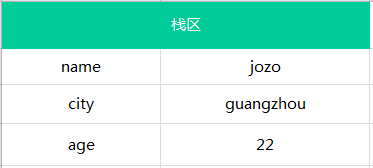
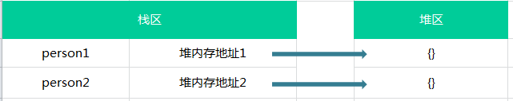
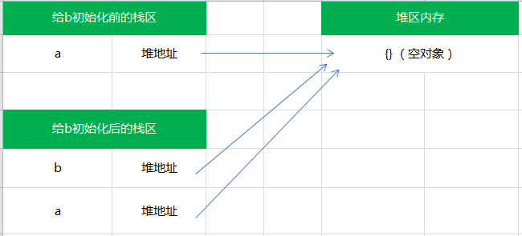

ECMAScript の変数には2つの異なるデータ型があります：基本型、参照型。他にも呼び方があり、例えばプリミティブ型とオブジェクト型，メソッドを持つ型とメソッドを持てない型、さらに分けると可変型と不変型、実はこれらの呼び方はこの2つの型の特徴に基づいて名付けられたもので、皆さんが好きなように呼んでください o(╯□╰)o 。
1.基本型
基本的なデータ型には、undefined、boolean、number、string、nullがあります。基本型へのアクセスは値によるアクセスで、つまり変数に保存されている実際の値を操作できます。基本型には以下の特徴があります：
1.基本型の値は変更できません：
どのような方法でも基本型の値を変更することはできません。例えば文字列：
var name = 'jozo'; name.toUpperCase(); // 输出 'JOZO' console.log(name); // 输出 'jozo'
元のnameは変更されておらず、toUpperCase()メソッドを呼び出した後に返されるのは新しい文字列であることがわかります。
もう一つ見てみましょう：
var person = 'jozo';
person.age = 22;
person.method = function(){//...};
console.log(person.age); // undefined
console.log(person.method); // undefined
上記のコードから、基本型にプロパティやメソッドを追加できないことがわかります。基本型は変更できないことが再び示されました；
2.基本型の比較は値の比較です：
それらの値が等しい場合にのみ等しくなります。
しかし、次のようにするかもしれません：
var a = 1; var b = true; console.log(a == b);//true
これらは等しくないのですか？実はこれは型変換と==演算子の知識です。つまり、== を使って異なる型の2つの変数を比較する場合、型変換が行われます。上の比較では、まず true が数値の 1 に変換され、数値の 1 と比較されるため、結果は true になります。これは、比較する2つの値の型が異なる場合に == 演算子が型変換を行うためですが、2つの値の型が同じ場合は、== であっても === と同じになります。
var a = 'jozo'; var b = 'jozo'; console.log(a === b);//true
3.基本型の変数はスタック領域に格納されます（スタック領域とはメモリ内のスタックメモリを指します）
次のような基本型の変数があるとします：
var name = 'jozo'; var city = 'guangzhou'; var age = 22;
その場合、その格納構造は下図のようになります：

スタック領域には、変数の識別子と変数の値が含まれます。
2.参照型
参照型はもう少し面白くて楽しいものです。
JavaScriptでは、上記の基本型以外(number,string,boolean,null,undefined)は参照型であり、つまりオブジェクトです。オブジェクトはプロパティとメソッドの集合です。つまり、参照型はプロパティとメソッドを持つことができ、プロパティはさらに基本型と参照型を含むことができます。参照型のいくつかの特性を見てみましょう：
1.参照型の値は変更可能です
参照型にはプロパティとメソッドを追加したり、そのプロパティとメソッドを削除したりできます。例：
var person = {};//创建个控对象 --引用类型
person.name = 'jozo';
person.age = 22;
person.sayName = function(){console.log(person.name);}
person.sayName();// 'jozo'
delete person.name; //删除person对象的name属性
person.sayName(); // undefined
上記のコードは、参照型がプロパティとメソッドを持つことができ、動的に変更できることを示しています。
2.参照型の値は、スタックメモリとヒープメモリの両方に保存されるオブジェクトです
JavaScriptは他の言語と異なり、メモリ内の位置に直接アクセスすることはできません。つまり、オブジェクトのメモリ空間を直接操作することはできません。では、何を操作するのでしょうか？ 実際には、オブジェクトの参照を操作します。そのため、参照型の値は参照によってアクセスされます。
正確に言うと、参照型の格納にはメモリのスタック領域とヒープ領域（ヒープ領域とはメモリ内のヒープメモリを指します）の両方が必要です。スタック領域のメモリには、変数の識別子と、ヒープメモリ内のそのオブジェクトを指すポインタ（つまり、そのオブジェクトのヒープメモリ上のアドレス）が保存されます。
次のようなオブジェクトがあるとします：
var person1 = {name:'jozo'};
var person2 = {name:'xiaom'};
var person3 = {name:'xiaoq'};
この3つのオブジェクトがメモリ内に保存されている様子は下図のようになります：

3.参照型の比較は参照の比較です
var person1 = '{}';
var person2 = '{}';
console.log(person1 == person2); // true
基本型の比較の説明の際、比較する2つの値の型が同じ場合は === を使うのと同じであると述べました。そのため出力は true になります。もう一度見てみましょう：
var person1 = {};
var person2 = {};
console.log(person1 == person2); // false
もうお気づきかもしれませんが、上では2つの文字列を比較しているのに対し、下では2つのオブジェクトを比較しています。なぜ見た目がまったく同じオブジェクトが等しくないのでしょうか？
忘れないでください。参照型は参照によってアクセスされます。言い換えれば、2つのオブジェクトのヒープメモリ上のアドレスが同じかどうかを比較します。明らかに、person1 と person2 のヒープメモリ上のアドレスは異なります：

したがって、これらは完全に異なるオブジェクトであり、false が返されます。
3.単純代入
基本型をある変数から別の変数に代入する場合、その変数に新しい値が作成され、その値が新しい変数に割り当てられた位置にコピーされます：
var a = 10; var b = a; a ++ ; console.log(a); // 11 console.log(b); // 10
このとき、a に保存されている値は 10 です。a を使って b を初期化すると、b に保存される値も 10 になりますが、b の中の 10 は a の中のものとは完全に独立しています。この値は a の値の単なるコピーです。以降、この2つの変数は互いに影響を受けることなく任意の操作に参加できます。

つまり、基本型は代入操作後、2つの変数は互いに影響を受けません。
4.オブジェクト参照
参照型の値をある変数から別の変数に代入する場合も同様に、変数に格納されているオブジェクトの値のコピーが、新しい変数に割り当てられた空間に配置されます。参照型の説明の際に述べたように、変数に保存されているのはオブジェクトのヒープメモリ上のアドレスです。そのため、単純代入とは異なり、この値のコピーは実際にはポインタであり、そのポインタはヒープメモリに格納されているオブジェクトを指しています。代入操作後、2つの変数は同じオブジェクトのアドレスを保持するため、この2つの変数は同じオブジェクトを指すことになります。したがって、どちらかの変数を変更すると、互いに影響し合います：
var a = {}; // a保存了一个空对象的实例
var b = a; // a和b都指向了这个空对象
a.name = 'jozo';
console.log(a.name); // 'jozo'
console.log(b.name); // 'jozo'
b.age = 22;
console.log(b.age);// 22
console.log(a.age);// 22
console.log(a == b);// true
それらの関係は下図のようになります：

したがって、参照型の代入は、実際にはオブジェクトがスタック領域に保存されているアドレスポインタの代入です。そのため、2つの変数は同じオブジェクトを指し、どのような操作も互いに影響し合います。
原文リンク：https://segmentfault.com/a/1190000002789651